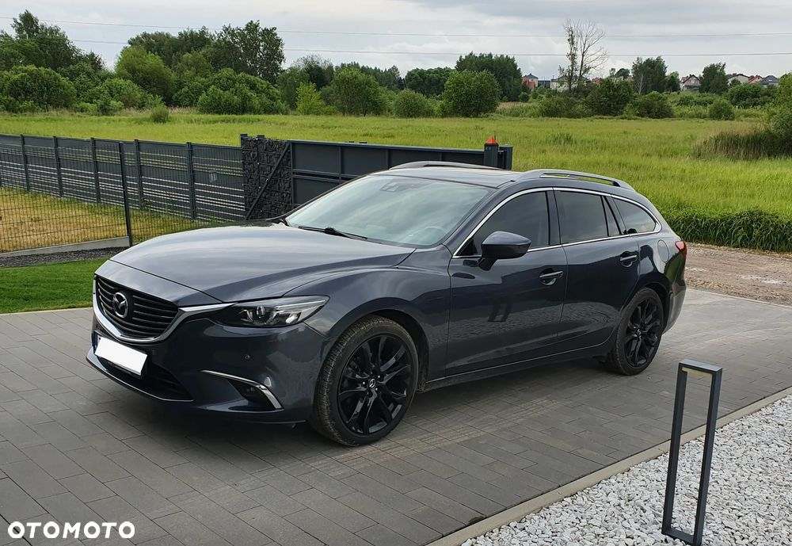
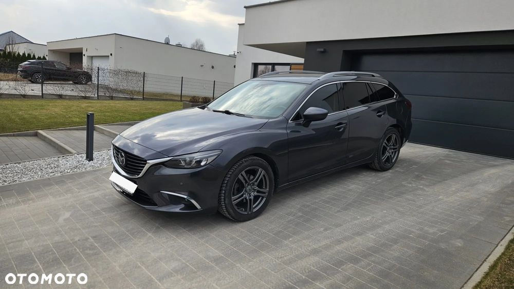
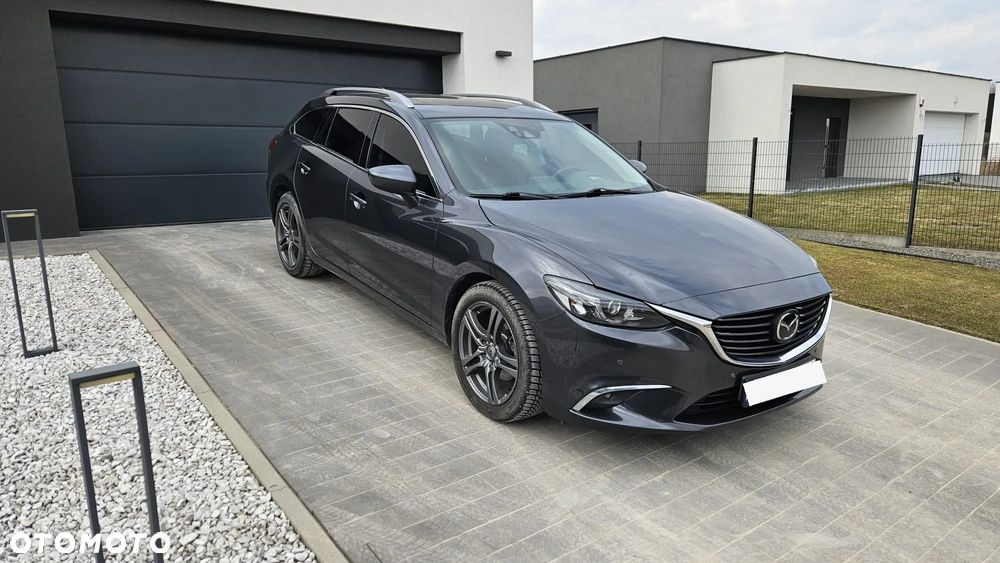
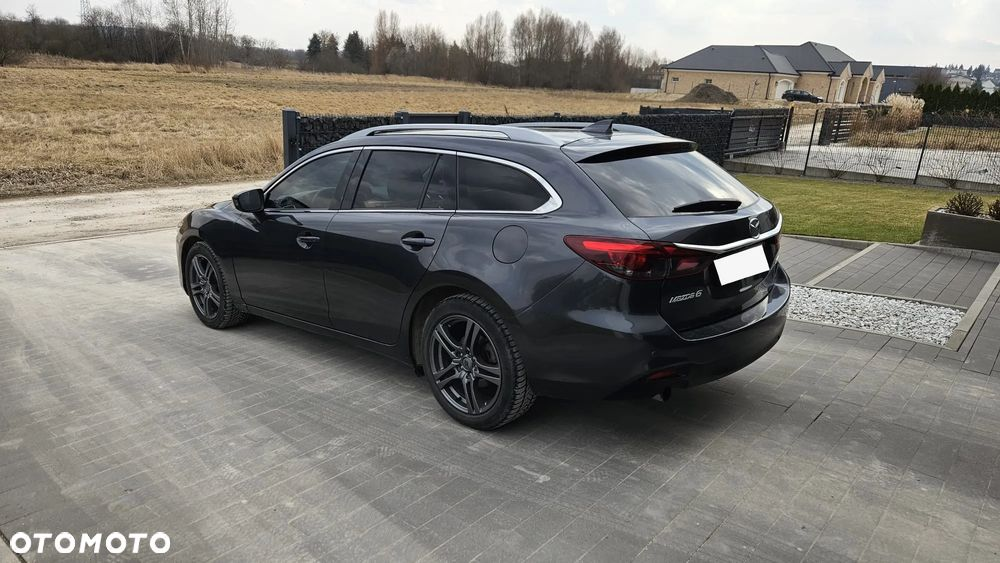
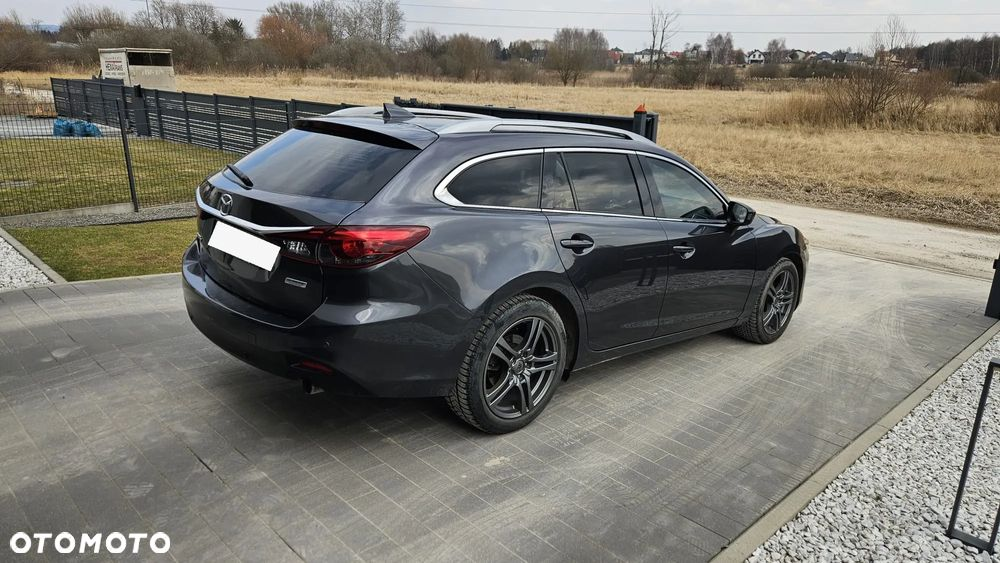
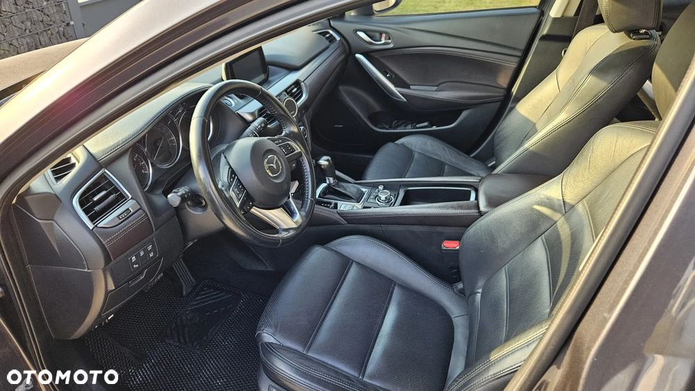
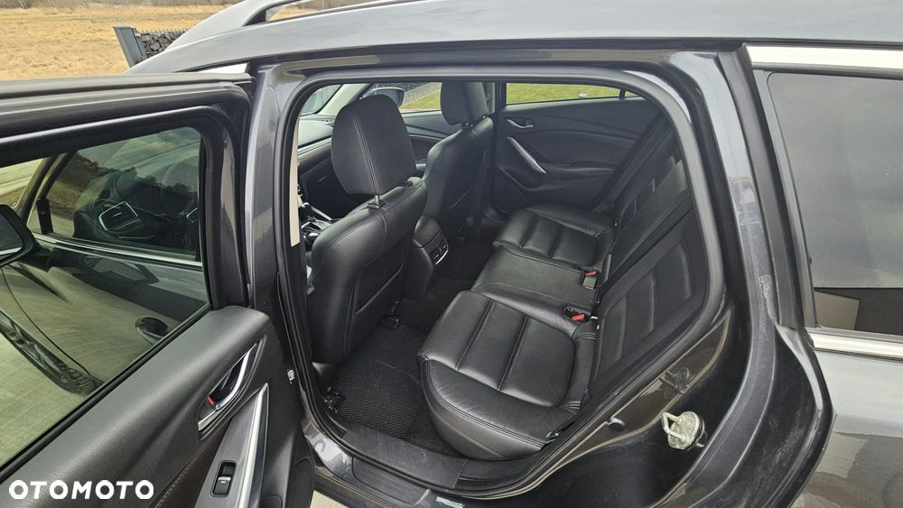
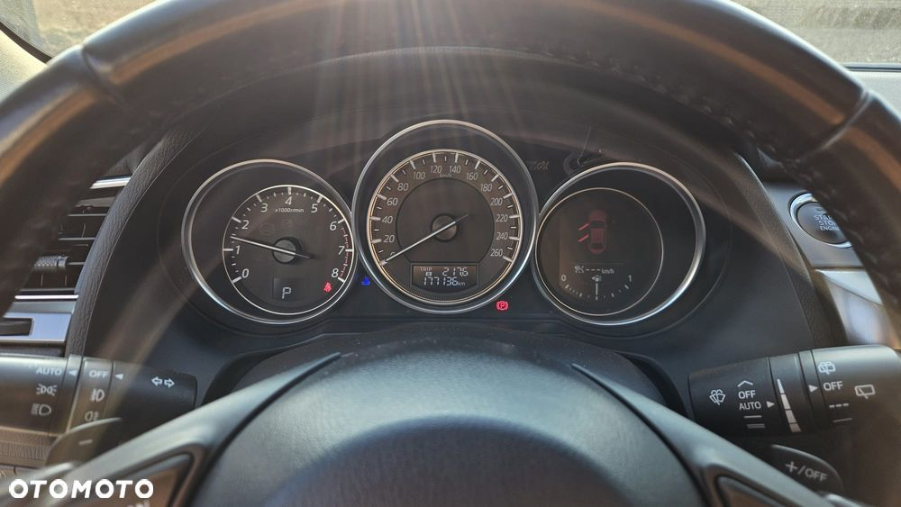
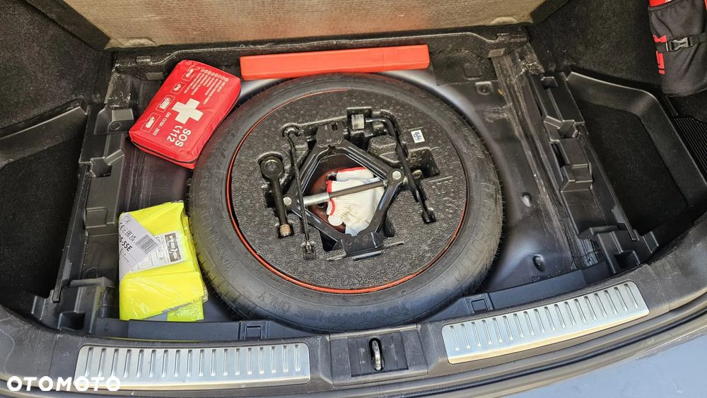
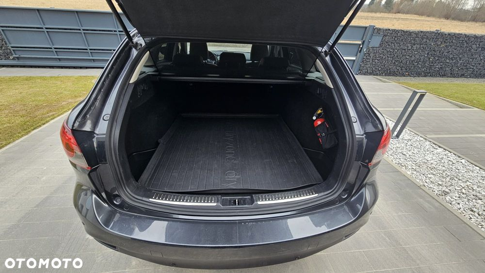

MAZDA 6 – Oferuję zadbany egzemplarz z 2015 roku, który wyróżnia się najbogatszym możliwym wyposażeniem i komfortem jazdy. Idealny dla osób ceniących wygodę, bezpieczeństwo i nowoczesne technologie.
WYPOSAŻENIE:
Skrzynia biegów automatyczna 6 biegowa hydrauliczna
Tapicerka skórzana.
Elektrycznie regulowane przednie fotele.
Pogrzewane wszystkie fotele.
Oryginalany andriod auto/car play.
System nawigacji oraz kamera cofania.
Wyświetlacz head up.
Sytem bezkluczykowy (dwa kluczyki).
Reflektory full led.
Elektyczne składane lusterka.
Aktywny tempomat.
Koło dojazdowe z akcesoriami.
W 2020 r. była wykonana kompleksowa konserwacja podwozia.
Przy przebiegu 140 000 km zostały wymieniony płyn hamulcowy i płyn w chłodnicy.
Przy przebiegu 146 000 km zostały wymienione kompletne wahacze z przodu.
Przy przebiegu 148 000 km zostały wymieniony olej i filtr w skrzyni biegów.
Przy przebiegu 168 000 km wymienione tarcze przód, klocki przód i tył.
15.09.2023 r. wymieniony akumulator.
Serwis olejowy co 10 tyś. km.
Samochód kupiony w polskim salonie.
Garażowany.
Stan mechaniczny i wizualny bardzo dobry.
Auto sprzedaję na 18” aluminiowych felgach (w kolorze grafitowym) z oponami zimowymi.









